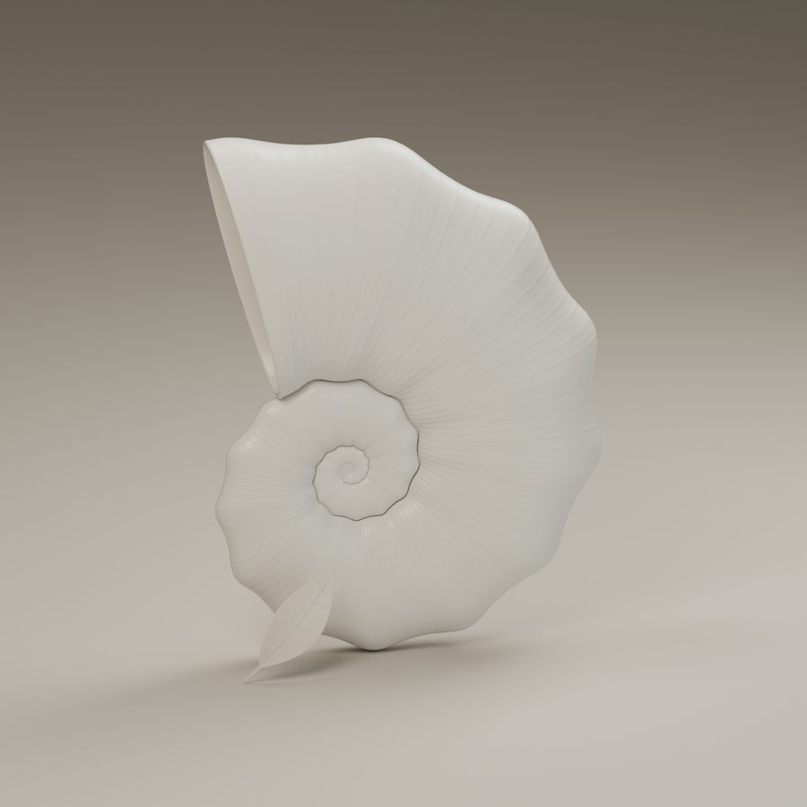
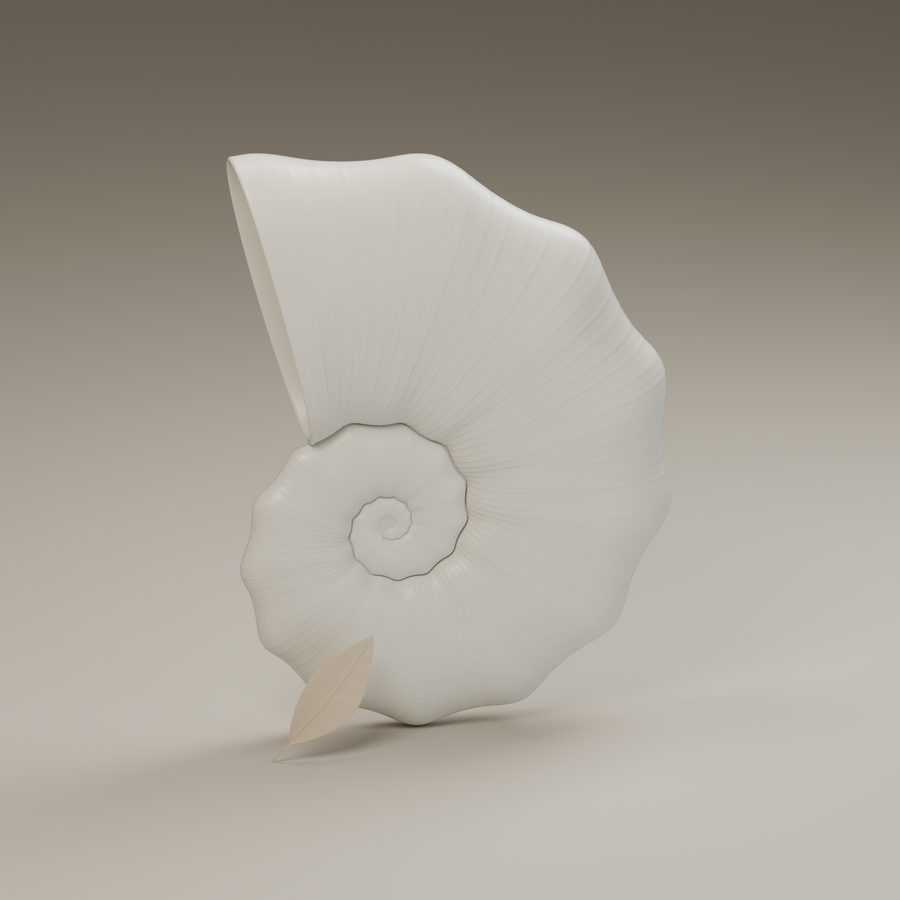
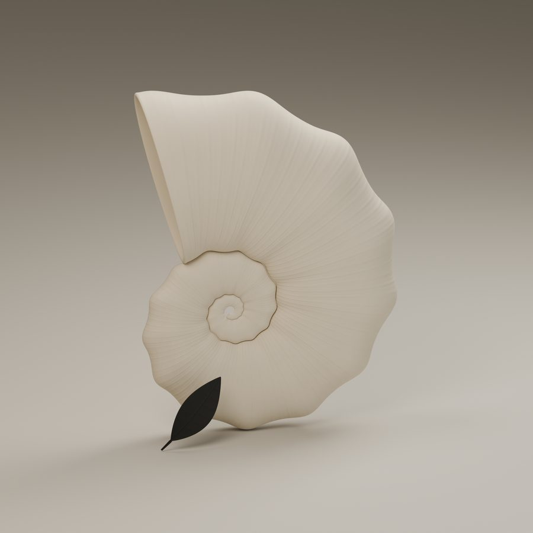
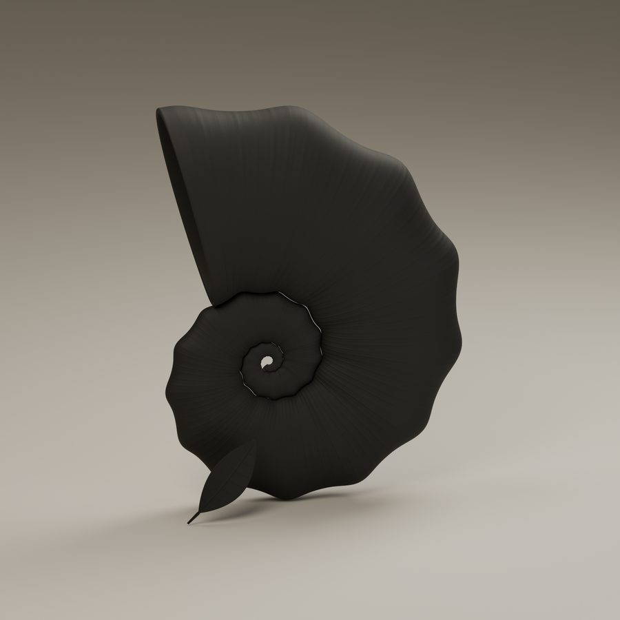
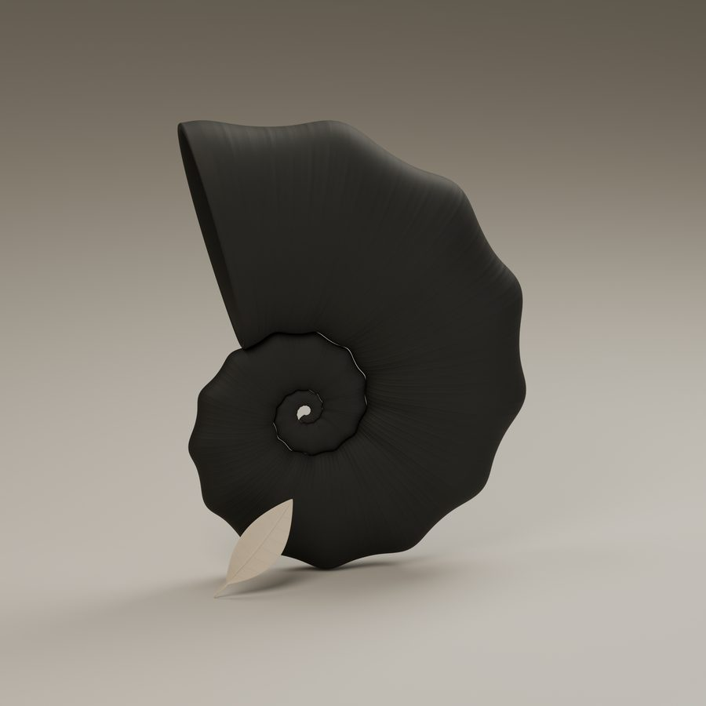
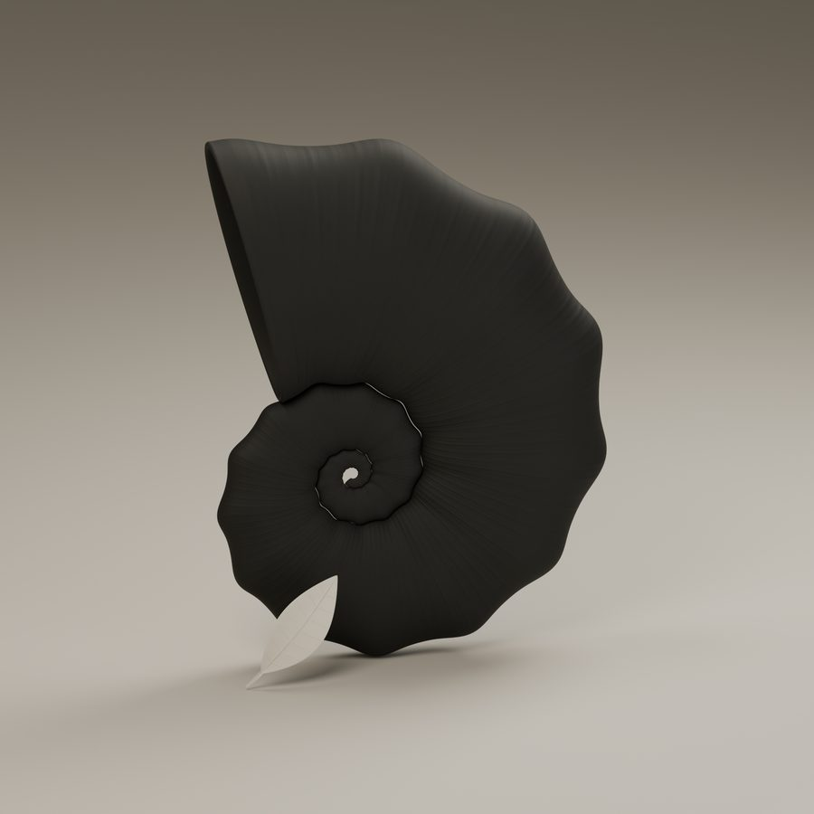
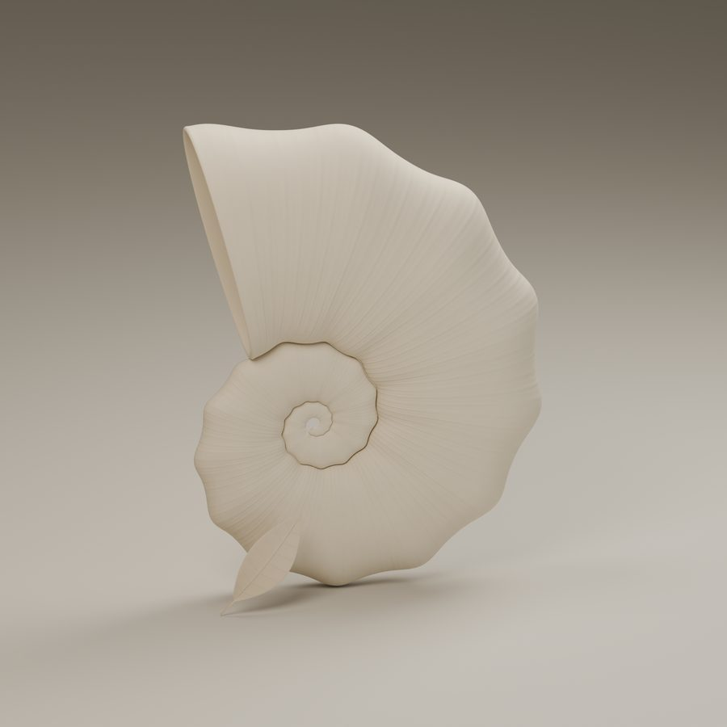

Cámara I
Primera Luz
Antes del lenguaje. Antes de la elección. La concha aún no tiene nada que perdonarse.
Concha perla · Hoja perlaContemplación
Una teoría de la vida, construida como se construye una concha — una habitación a la vez, ninguna abandonada del todo.
Un nautilo nunca abandona una habitación. Supera su forma, sella el muro, y enrolla una cámara más grande alrededor de la última — para que la primera habitación que construyó, aquella que habitó antes de tener algo que proteger, permanezca sellada en el centro de cada hogar que construye después.
Contemplación toma prestada esta arquitectura para una teoría de la vida. Tres edades — perla, carbón, hueso — cada una una cámara que la concha tarda años en construir. Dentro de cada edad, tres momentos más, marcados no por la concha sino por la hoja que lleva consigo: la parte de una persona que sigue envejeciendo aun cuando el resto de ella se ha detenido.
Nueve cámaras, un solo giro continuo — haz clic en una para leerla
I · Perla
Antes de que una persona se haya hecho algo a sí misma, es simplemente esto: entera, intacta, aún incapaz de arruinar nada. La concha permanece perla tanto en el asombro como en los primeros pequeños sustos — la inocencia no es un momento, es una duración.

Antes del lenguaje. Antes de la elección. La concha aún no tiene nada que perdonarse.
Concha perla · Hoja perla
La hoja envejece años antes que la concha — la curiosidad supera al cuerpo que la sostiene, la pureza aún intacta.
Concha perla · Hoja hueso
Algo oscuro roza por primera vez. La concha no se estremece. Todavía no.
Concha perla · Hoja carbónII · Carbón
Entonces la concha cambia de color — no con suavidad. Esta es la edad que nadie pone en el folleto: la identidad desarmada antes de reconstruirse, la inocencia gastada en lecciones que nadie asignó. No es decadencia. Es la matrícula.

Cada muro que construyeron los años perla se pone a prueba a la vez. La mayoría falla.
Concha carbón · Hoja carbón
La hoja envejece más rápido que el duelo. Algo firme está llegando, disfrazado de agotamiento.
Concha carbón · Hoja hueso
Por la duración de una hoja, la primera cámara se recuerda a sí misma — pequeña, sellada, todavía ahí.
Concha carbón · Hoja perlaIII · Hueso
La última cámara no es tanto un final como un asentamiento — el ruido de la segunda edad se apaga, reemplazado por lo que la concha decidió que en realidad sostenía el peso. Esta es la edad que llaman sabia, sobre todo porque está demasiado cansada para discutir.
Los años oscuros no desaparecen. Solo dejan de ser una herida y se convierten en una textura.
Concha hueso · Hoja carbónEl mismo blanco que la Cámara I — esta vez ganado, en lugar de simplemente otorgado.
Concha hueso · Hoja perla
La concha y la hoja terminan de envejecer al mismo ritmo, por primera y única vez. Lo que queda es hueso — quieto, esencial, terminado.
Concha hueso · Hoja huesoNueve cámaras, una sola concha, un solo giro continuo hacia el centro. La perla que una persona fue al nacer nunca se derriba — solo se construye alrededor de ella, una habitación honesta a la vez.